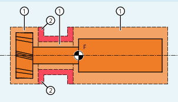

A machine-specific protection zone or its contour is defined using the geometry axis, i.e. referenced to the basic coordinate system (BCS) of a channel. In order that correct protection-zone monitoring can take place in all channels in which the machine-specific protection zone is active, the basic coordinate system (BCS) of all of the channels involved must be identical:
position of the coordinate origin referred to the machine zero
Orientation of the coordinate axes
Tool-related protection zones
Coordinates for tool-related protection zones must be specified as absolute values referred to the tool holder reference point F.
Workpiece-related protection zones
Coordinates for workpiece-related protection zones must be specified as absolute values referred to the zero point of the basic coordinate system (BCS).
For protection zones symmetrical around the axis or rotation (e.g. spindle chuck), you must describe the complete contour and not only the contour up to the center of rotation.
Tool-related protection zones must always be convex. If a concave protected zone is desired, this should be subdivided into several convex protection zones.
① | Convex protection zones |
② | Concave protection zones (not permissible!) |
F | Toolholder reference point |
During the definition of a protection zone, the following functions must not be active or used:
Tool radius compensation (cutter radius compensation, tool nose radius compensation)
Transformation
Reference point approach (G74)
Fixed point approach (G75)
Dwell time (G4)
Block search stop (STOPRE)
End of program (M17, M30)
M functions: M0, M1, M2